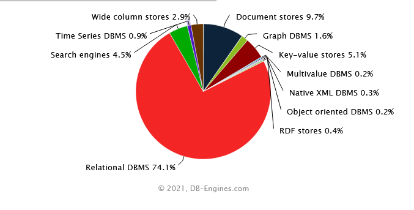
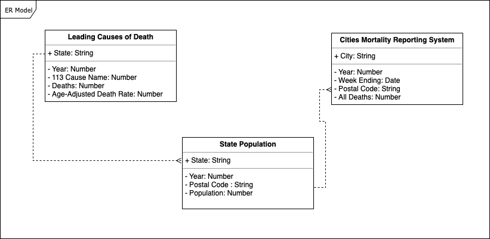

Projet : Manipulationn de Base de données NoSQL
Contents
Projet : Manipulationn de Base de données NoSQL#
Table des Matières#
Introduction#
Du fait du contexte Big Data, les bases de données NoSQL peuvent enregistrer et traiter sans problème de gros volumes de données.
NoSQL est aussi un complément utile des bases de données SQL relationnelles traditionnelles.

Il existe plusieurs types de bases de données NoSQL.
Les plus populaires sont présentés ci-dessous :
Orienté clés-valeurs #1 Redis
Orienté documents #1 MongoDB
Orienté larges colonnes #1 Cassandra
Orienté graphes #1 Neo4j
Pour plus d’infos sur NoSQL, DSE FMP CU et db-engines
MongoDB#
MongoDB est une base de données orientée documents, connues sous le nom de données semi-structurées..

Les opérations CRUD#
CREATE#
# Importation de la libraires
import pymongo
# La connexion est ouverte au port 27017
client = pymongo.MongoClient('localhost', 27017)
# creation de la base de données "projet"
mydb = client["projet"]
# création d'une collection
collection = mydb["example1"]
# Insertion de données dans mongoDB
exemple = { "nom" : "MONDJEHI",
"prenom" : "ROLAND",
"age" : 25,
"email" : "mondrolan@gmail.com"}
collection.insert_one(exemple)
<pymongo.results.InsertOneResult at 0x1c1623dcf70>
# Inserer plusieurs données
exemples = [{ "nom" : "MONDJEHI",
"prenom" : "Jean Marie",
"age" : 30,
"email" : "mondjehijeanmarie@gmail.com"},
{ "nom" : "MONDJEHI",
"prenom" : "Wilfred",
"age" : 26,
"email" : "mondjehiwilfred@gmail.com"}]
collection.insert_many(exemples)
<pymongo.results.InsertManyResult at 0x1c16228d280>
READ#
# Obtenir la liste des collections
print(mydb.list_collection_names())
['example1']
# obtenir un document
doc = collection.find_one()
print(doc)
{'_id': ObjectId('63a64ad78320cb5b2a745ad1'), 'nom': 'MONDJEHI', 'prenom': 'ROLAND', 'age': 25, 'email': 'mondrolan@gmail.com'}
# Obtenir un document spécifique
doc = collection.find_one({"prenom":"Wilfred"})
print(doc)
{'_id': ObjectId('63a64c358320cb5b2a745ad3'), 'nom': 'MONDJEHI', 'prenom': 'Wilfred', 'age': 26, 'email': 'mondjehiwilfred@gmail.com'}
# Obtenir tous les documents
docs = collection.find()
for doc in docs:
print(doc)
{'_id': ObjectId('63a64ad78320cb5b2a745ad1'), 'nom': 'MONDJEHI', 'prenom': 'ROLAND', 'age': 25, 'email': 'mondrolan@gmail.com'}
{'_id': ObjectId('63a64c358320cb5b2a745ad2'), 'nom': 'MONDJEHI', 'prenom': 'Jean Marie', 'age': 30, 'email': 'mondjehijeanmarie@gmail.com'}
{'_id': ObjectId('63a64c358320cb5b2a745ad3'), 'nom': 'MONDJEHI', 'prenom': 'Wilfred', 'age': 26, 'email': 'mondjehiwilfred@gmail.com'}
UPDATE#
3 méthodes update_one(), update_many() , find_one_and_update()
Mise à jour du prenom Wilfred à WILFRED
collection.update_one({"prenom": "Wilfred"},
{'$set': {
'prenom': "WILFRED"
}
}, upsert=False)
<pymongo.results.UpdateResult at 0x1c1623e6430>
docs = collection.find()
for doc in docs:
print(doc)
{'_id': ObjectId('63a64ad78320cb5b2a745ad1'), 'nom': 'MONDJEHI', 'prenom': 'ROLAND', 'age': 25, 'email': 'mondrolan@gmail.com'}
{'_id': ObjectId('63a64c358320cb5b2a745ad2'), 'nom': 'MONDJEHI', 'prenom': 'Jean Marie', 'age': 30, 'email': 'mondjehijeanmarie@gmail.com'}
{'_id': ObjectId('63a64c358320cb5b2a745ad3'), 'nom': 'MONDJEHI', 'prenom': 'WILFRED', 'age': 26, 'email': 'mondjehiwilfred@gmail.com'}
DELETE#
# print number of document with the key x = 4
print("Nombre de documents avant suppression : ", collection.count_documents({'nom': 'MONDJEHI'}))
Nombre de documents avant suppression : 3
# Supprimer le document dont le prenom est WILFRED
collection.delete_one({'prenom': 'WILFRED'})
<pymongo.results.DeleteResult at 0x1c161788970>
print("Nombre de documents après suppression : ", collection.count_documents({'nom': 'MONDJEHI'}))
Nombre de documents après suppression : 2
MongoDB stocke des types de données spécifiques#
Une image#
from PIL import Image
from matplotlib import pyplot
image = Image.open('images/FSEG.jpg')
pyplot.imshow(image)
pyplot.show()
Essayons de stocker cette image dans mongoDB
# Maintenant que l'image est chargée, nous devons la convertir en un tableau numpy
import numpy as np
from bson.binary import Binary
import pickle
import pymongo
# Conversion en numpy
data = np.asarray(image)
# Affichier les dimensions
print(data.shape)
(212, 847, 3)
#
post = {}
# pickle dump le tableau numpy et ensuite le binarise (rappel MongoDB = Bson = Bytes json)
post['image'] = Binary( pickle.dumps( data, protocol=2) )
client = pymongo.MongoClient('localhost', 27017)
mydb = client["projet"]
collection = mydb["image"]
collection.insert_one(post)
<pymongo.results.InsertOneResult at 0x1c164e80250>
Rechargement de l’image
client = pymongo.MongoClient('localhost', 27017)
mydb = client["projet"]
collection = mydb["image"]
docs = collection.find()
# Charger l'objet binaire
doc = pickle.loads(next(docs)["image"])
print(doc.shape,type(doc))
(212, 847, 3) <class 'numpy.ndarray'>
# De numpy à image
image = Image.fromarray(doc)
# Plot l'image
pyplot.imshow(image)
pyplot.show()
# Charger l'objet binaire
doc = pickle.loads(next(docs)["image"])
print(doc.shape,type(doc))
# From numpy to img
image = Image.fromarray(doc)
# Show image
pyplot.imshow(image)
pyplot.show()
Mini-projet : Scrapper et stocker dans mongoDB ( BeautifulSoup et Pymongo)#
import requests
from bs4 import BeautifulSoup
import re
import tqdm.notebook as tq
# Utilisation d'un exemple
# A partir de la page wikipedia de Kevin Bacon
starting_url = "https://en.wikipedia.org/wiki/Kevin_Bacon"
# Obtenir le contenu html
response = requests.get(starting_url)
result = response.content
# Analyser le html avec BS
soup = BeautifulSoup(result, 'html.parser')
# Dans le corps du texte, trouvez tous les href qui correspondent à la requête regex
# (commencez par wiki et ignorez ! : pour éviter les artefacts comme les jpeg)
list_b = []
for link in soup.find("div",attrs={'id':'bodyContent'}).find_all("a",href = re.compile("^(/wiki/)((?!:).)*$")):
list_b.append(link.get("href"))
print(len(list_b))
print(list_b[0:5])
428
['/wiki/Kevin_Bacon_(disambiguation)', '/wiki/Philadelphia', '/wiki/Kevin_Bacon_filmography', '/wiki/Kyra_Sedgwick', '/wiki/Sosie_Bacon']
# Un pas de plus, nous voulons traiter le texte et le sauvegarder dans MongoDB.
import pymongo
class crawler:
def __init__(self,starting_url, depth, mongo_uri, db_name, collection_name ):
self.starting_url = starting_url
self.depth = depth
self.mongo_uri = mongo_uri
self.db_name = db_name
self.collection_name = collection_name
self.hrefs_checked = []
self.n_processed = 0
def Get_hrefs(self,url):
hrefs = []
for link in self.soup.find("div",attrs={'id':'bodyContent'}).find_all("a",href = re.compile("^(/wiki/)((?!:).)*$")):
if "href" in link.attrs:
if link.get("href") not in hrefs:
hrefs.append(link.get("href"))
return(hrefs)
def parse_url(self):
full_text = ""
for para in self.soup.find_all("p"):
full_text += para.text + " "
return(full_text)
def save2mongo(self):
Client = pymongo.MongoClient(self.mongo_uri)
db = Client[self.db_name]
collection = db[self.collection_name]
collection.insert_many(self.list_of_insertion)
def run_analysis(self):
self.list_of_insertion = []
for i in tq.tqdm(range(self.depth)):
# Première itération pour Kevin Bacon
if i == 0:
response = requests.get(self.starting_url)
result = response.content
self.soup = BeautifulSoup(result, 'html.parser')
hrefs = self.Get_hrefs(self.starting_url)
text = self.parse_url()
self.hrefs_checked.append(self.starting_url)
self.n_processed += 1
self.list_of_insertion.append({"id":self.n_processed, "text" : text, "href":self.starting_url})
else:
hrefs_temp = []
for starting_url in tq.tqdm(hrefs):
url = "https://en.wikipedia.org" + starting_url
response = requests.get(url)
result = response.content
self.soup = BeautifulSoup(result, 'html.parser')
hrefs_temp += self.Get_hrefs(url)
text = self.parse_url()
self.n_processed += 1
self.list_of_insertion.append({"id":self.n_processed, "text" : text, "href":url})
if len(self.list_of_insertion) % 200 == 0:
self.save2mongo()
self.list_of_insertion = []
hrefs = [href for href in hrefs_temp if href not in hrefs_checked]
self.save2mongo()
crawl = crawler(starting_url="https://en.wikipedia.org/wiki/Kevin_Bacon",
depth = 1,
mongo_uri = 'mongodb://localhost:27017',
db_name = "Mini_Project", collection_name="KB")
crawl.run_analysis()
import pymongo
client = pymongo.MongoClient("mongodb://localhost:27017/")
for db in client.list_databases():
print(db)
{'name': 'Mini_Project', 'sizeOnDisk': 4227072, 'empty': False}
{'name': 'admin', 'sizeOnDisk': 40960, 'empty': False}
{'name': 'config', 'sizeOnDisk': 110592, 'empty': False}
{'name': 'local', 'sizeOnDisk': 40960, 'empty': False}
{'name': 'projet', 'sizeOnDisk': 315392, 'empty': False}
client = pymongo.MongoClient("mongodb://localhost:27017/")
mydb = client['Mini_Project']
print("Liste des collections\n--------------------")
for coll in mydb.list_collection_names():
print(coll)
Liste des collections
--------------------
KB
collection = mydb["KB"]
doc = collection.find_one()
doc
{'_id': ObjectId('63a65cca8320cb5b2a745ad8'),
'id': 1,
'text': '\n Kevin Norwood Bacon[2] (born July 8, 1958)[3] is an American actor. His films include the musical-drama film Footloose (1984), the controversial historical conspiracy legal thriller JFK (1991), the legal drama A Few Good Men (1992), the historical docudrama Apollo 13 (1995), and the mystery drama Mystic River (2003). Bacon is also known for voicing the title character in Balto (1995), and has taken on darker roles, such as that of a sadistic guard in Sleepers (1996), and troubled former child abuser in The Woodsman (2004). He is further known for the hit comedies National Lampoon\'s Animal House (1978), Diner (1982), Tremors (1990) and Crazy, Stupid, Love (2011). His other well-known films are Friday the 13th (1980), Flatliners (1990), The River Wild (1994), Wild Things (1998), Stir of Echoes (1999), Hollow Man (2000), Frost/Nixon (2008), X-Men: First Class (2011), Black Mass (2015) and Patriots Day (2016). He is equally prolific on television, having starred in the Fox drama series The Following (2013–2015). For the HBO original film Taking Chance (2009), Bacon won a Golden Globe Award and a Screen Actors Guild Award, also receiving a Primetime Emmy Award nomination. More recently, Bacon portrayed the title character, and was the series lead, of the Amazon Prime television series I Love Dick, for which he was nominated for a Golden Globe Award.\n The Guardian named him one of the best actors never to have received an Academy Award nomination.[4] In 2003, Bacon received a star on the Hollywood Walk of Fame for his contributions to the motion picture industry.[5]\n Bacon has become associated with the concept of interconnectedness among people, having been popularized by the game "Six Degrees of Kevin Bacon". In 2007, he created SixDegrees.org, a charitable foundation.[6] He is a brand ambassador for British mobile network operator EE and has been featured in several ads for the company.\n Bacon, the youngest of six children, was born and raised in a close-knit family in Philadelphia.[3] His mother, Ruth Hilda (née Holmes; 1916–1991), taught at an elementary school and was a liberal activist,[3] while his father, Edmund Bacon (1910–2005), was an urban planner who served for many years as executive director of the Philadelphia City Planning Commission and authored the seminal text Design of Cities.[7]\n Bacon attended Julia R. Masterman High School for both middle and high school.[8] At age 16, in 1975, Bacon won a full scholarship to and attended the Pennsylvania Governor\'s School for the Arts at Bucknell University,[9] a state-funded five-week arts program at which he studied theater under Glory Van Scott. The experience solidified Bacon\'s passion for the arts.[6][7]\n Bacon left home at age 17 to pursue a theater career in New York City, where he appeared in a production at the Circle in the Square Theater School. "I wanted life, man, the real thing", he later recalled to Nancy Mills of Cosmopolitan. "The message I got was \'The arts are it. Business is the devil\'s work. Art and creative expression are next to godliness.\' Combine that with an immense ego and you wind up with an actor."[10]\nBacon\'s debut in the fraternity comedy National Lampoon\'s Animal House (1978) did not lead to the fame he had sought, and Bacon returned to waiting tables and auditioning for small roles in theater.[7] He briefly worked on the television soap operas Search for Tomorrow (1979) and Guiding Light (1980–81) in New York.\n In 1980, he appeared in the slasher film Friday the 13th.[11] Some of his early stage work included Getting Out, performed at New York\'s Phoenix Theater, and Flux, at Second Stage Theatre during their 1981–1982 season.[12]\n In 1982, he won an Obie Award for his role in Forty Deuce,[13] and soon afterward he made his Broadway debut in Slab Boys, with then-unknowns Sean Penn and Val Kilmer. However, it was not until he portrayed Timothy Fenwick that same year in Barry Levinson\'s film Diner\xa0– costarring Steve Guttenberg, Daniel Stern, Mickey Rourke, Tim Daly, and Ellen Barkin\xa0– that he made an indelible impression on film critics and moviegoers alike.[14]\n Bolstered by the attention garnered by his performance in Diner, Bacon starred in Footloose (1984).[12] Richard Corliss of TIME likened Footloose to the James Dean classic Rebel Without a Cause and the old Mickey Rooney/Judy Garland musicals, commenting that the film includes "motifs on book burning, mid-life crisis, AWOL parents, fatal car crashes, drug enforcement, and Bible Belt vigilantism."[15] To prepare for the role, Bacon enrolled at a high school as a transfer student named "Ren McCormick" and studied teenagers before leaving in the middle of the day.[7][16] Bacon earned strong reviews for Footloose.[17] \nBacon\'s critical and box office success led to a period of typecasting in roles similar to the two he portrayed in Diner and Footloose, and he had difficulty shaking this on-screen image. For the next several years he chose films that cast him against either type and experienced, by his own estimation, a career slump.\n After a cameo in John Hughes\'s 1987 comedy Planes, Trains and Automobiles,[18] Bacon starred in John Hughes\'s 1988 comedy She\'s Having a Baby,[12] and the following year he was in another comedy called The Big Picture.[19]\n In 1990, Bacon had two successful roles. He played a character who saved his town from under-the-earth "graboid" monsters in the comedy/horror film Tremors,[20] and he portrayed an earnest medical student experimenting with death in Joel Schumacher\'s Flatliners.[12]\n In Bacon\'s next project he starred opposite Elizabeth Perkins in He Said, She Said. Despite lukewarm reviews and low audience turnout, He Said, She Said was illuminating for Bacon. Required to play a character with sexist attitudes, he admitted that the role was not that large a stretch for him.[12]\n By 1991, Bacon began to give up the idea of playing leading men in big-budget films and to remake himself as a character actor. "The only way I was going to be able to work on \'A\' projects with really \'A\' directors was if I wasn\'t the guy who was starring", he confided to The New York Times writer Trip Gabriel. "You can\'t afford to set up a $40\xa0million movie if you don\'t have your star."[21] He performed that year as gay prostitute Willie O\'Keefe in Oliver Stone\'s JFK[22] and went on to play a prosecuting attorney in the military courtroom drama A Few Good Men.[23] Later that year he returned to the theater to play in Spike Heels, directed by Michael Greif.[12]\n In 1994, Bacon earned a Golden Globe nomination for his role in The River Wild,[12] opposite Meryl Streep. He described the film to Chase in Cosmopolitan as a "grueling shoot", in which "every one of us fell out of the boat at one point or another and had to be saved".\n His next film, Murder in the First, earned him the Broadcast Film Critic\'s Association Award in 1995,[12] the same year that he starred in the blockbuster hit Apollo 13.[24] Bacon played a trademark dark role once again in Sleepers (1996).[25] This part starkly contrasted with his appearance in the lighthearted romantic comedy, Picture Perfect (1997).[12]\n Bacon made his debut as a director with the television film Losing Chase (1996), which was nominated for three Golden Globe Awards, and won one.[26] Bacon again resurrected his oddball mystique that year as a mentally-challenged houseguest in Digging to China[12] and as a disc jockey corrupted by payola in Telling Lies in America.[12] As the executive producer of Wild Things (1998), Bacon reserved a supporting role for himself and went on to star in Stir of Echoes (1999), directed by David Koepp.[27]\n In 2000, he appeared in Paul Verhoeven\'s Hollow Man.[28] Bacon, Colin Firth and Rachel Blanchard depict a ménage à trois in their film, Where the Truth Lies.[29] Bacon and director Atom Egoyan have condemned the MPAA ratings board decision to rate the film "NC-17" rather than the preferable "R". Bacon commented: "I don\'t get it, when I see films (that) are extremely violent, extremely objectionable sometimes in terms of the roles that women play, slide by with an R, no problem, because the people happen to have more of their clothes on."[30]\n In 2003 he acted with Sean Penn and Tim Robbins in Clint Eastwood\'s movie Mystic River.\n Bacon was again acclaimed for a dark starring role playing an offending pedophile on parole in The Woodsman (2004), for which he was nominated for best actor and received the Independent Spirit Award.[31] He appeared in the HBO Films production of Taking Chance, based on an eponymous story written by Lieutenant Colonel Michael Strobl, an American Desert Storm war veteran.[32] The film premiered on HBO on February 21, 2009. Bacon won a Golden Globe Award and a Screen Actors Guild Award for Outstanding Performance by a Male Actor in a Miniseries or Television Movie for his role.\n On July 15, 2010, it was confirmed that Bacon would appear in Matthew Vaughn\'s X-Men: First Class as mutant villain Sebastian Shaw. [33][34]\n In March 2012, Bacon was featured in a performance of Dustin Lance Black\'s play, 8 – a staged reenactment of the federal trial that overturned California\'s Prop 8 ban on same-sex marriage – as Attorney Charles J. Cooper.[35] The production was held at the Wilshire Ebell Theatre and broadcast on YouTube to raise money for the American Foundation for Equal Rights.[36][37]\n From 2013 to 2015, Bacon starred as Ryan Hardy in the FOX television series The Following.[38] In 2013, he won a Saturn Award for Best Actor on Television for that role.[39]\n In 2015, he said in a Huffington Post interview he would like to return to the Tremors franchise.[40] However, Bacon did not appear in Tremors 5: Bloodline (2015).\n Beginning in 2012, Bacon has appeared in a major advertising campaign for the EE mobile network in the United Kingdom, based on the Six Degrees concept and his various film roles.[41][42] In 2015, he became a commercial spokesperson for the U.S. egg industry.[43]\n Bacon is the subject of the trivia game titled "Six Degrees of Kevin Bacon," based on the idea that, due to his prolific screen career covering a diverse range of genres, any Hollywood actor can be linked to another in a handful of steps based on their association with Bacon. The name of the game derives from the idea of six degrees of separation.\nAlthough he was initially dismayed by the game, the meme stuck, and Bacon eventually embraced it, forming the charitable initiative SixDegrees.org, a social networking service intended to link people and charities to each other.[44]\n The measure of proximity to Bacon has been mathematically formalized as the Bacon number and can be referenced at websites including Oracle of Bacon, which is in turn based upon Internet Movie Database data. In 2012, Google added a feature to their search engine, whereby searching for an actor\'s name followed by the words "Bacon Number" will show the ways in which that actor is connected to Kevin Bacon.[45] This feature is no longer active.\n A similar measurement exists in the mathematics community, where one measures how far one is removed from co-writing a mathematical paper with the prolific and itinerant mathematician Paul Erdős. This is done by means of the Erdős number, which is 0 for Paul Erdős himself, 1 for someone who co-wrote an article with him, 2 for someone who co-wrote with someone who co-wrote with him, etc. People have combined the Bacon number and the Erdős number to form the Erdős–Bacon number, which is the sum of the two.[46]\n In 1995, Kevin formed a band called The Bacon Brothers with his brother, Michael. The duo has released seven albums.[47] Kevin Bacon also sings in a variety of other media; he has serenaded his goats on Instagram,[48] and sings with the band the Old 97\'s in his role as himself in The Guardians of the Galaxy Holiday Special.[49]\n Bacon has been married to actress Kyra Sedgwick since September 4, 1988; they met on the set of the PBS version of Lanford Wilson\'s play Lemon Sky. He has said: "The time I was hitting what I considered to be bottom was also the time I met my wife, our kids were born, good things were happening. And I was able to keep supporting myself; that always gave me strength."[10] Bacon and Sedgwick have starred together in Pyrates, Murder in the First, The Woodsman, and Loverboy. They have two children, Travis Sedgwick (b. 1989) and Sosie Ruth (b. 1992). They reside on the Upper West Side of Manhattan.[50] Bacon was previously in a five-year relationship with actress Tracy Pollan, in the 1980s.[51]\n Bacon has spoken out for the separation of church and state,[52][53] and told The Times in 2005 that he did not "believe in God."[54] He has also said that he is not anti-religion.[55]\n Bacon and Sedgwick appeared in will.i.am\'s video "It\'s a New Day", which was released following Barack Obama\'s 2008 presidential win.\n The pair lost part of their savings in the Ponzi scheme of infamous swindler Bernie Madoff.[56][57]\n Bacon and Sedgwick learned in 2011, via their appearance on the PBS TV show Finding Your Roots with Henry Louis Gates, that they are ninth cousins, once removed.[58] They also appeared in a video[59] promoting the "Bill of Reproductive Rights", supporting among other things a woman\'s right to choose and have access to birth control.[60]\n ',
'href': 'https://en.wikipedia.org/wiki/Kevin_Bacon'}
total_count = collection.count_documents({})
print(total_count)
201
Mini-projet_2 : Une étude de cas sur la mortalité aux États-Unis#
Cette étude a pour but d’analyser la mortalité aux États-Unis en fonction des causes et des groupes d’âge.
Elle vise à répondre à des questions telles que :
Les principales causes et maladies qui ont tué des Américains au cours des deux dernières décennies
L’évolution des taux de mortalité liés à ces causes
Les différences géographiques entre ces causes
Le nombre de décès dans chaque État Américain par rapport à sa population.
Trois jeux de données sont utilisés dans cette étude et importés dans la base de données NoSQL
Sources de données
Principales causes de décès - US CDC National Center for Health Statistics
Décès dans 122 villes américaines (1962 - 2016) - Système d’information sur la mortalité dans les villes
Population des États
Diagramme du modèle ER#

Aperçu de l’analyse des données#
Analyse longitudinale des causes de la morbidité aux États-Unis
Analyse temporelle de l’évolution des tendances dans le temps aux États-Unis
Analyse catégorielle des causes primaires de décès
Analyse géographique des différences de tendances dans les causes de décès
Importation des données#
import pandas as pd
LeadingCauses = pd.read_csv("dataset/leading_causes.csv")
deathInUsCities = pd.read_csv("dataset/death_in_122UScities.csv")
statepops = pd.read_csv("dataset/statepops.csv")
print(LeadingCauses.shape)
print(deathInUsCities.shape)
print(statepops.shape)
(10296, 6)
(346342, 13)
(3468, 4)
LeadingCauses.head()
| Year | 113 Cause Name | Cause Name | State | Deaths | Age-adjusted Death Rate | |
|---|---|---|---|---|---|---|
| 0 | 2016 | Accidents (unintentional injuries) (V01-X59,Y8... | Unintentional injuries | Alabama | 2755 | 55.5 |
| 1 | 2016 | Accidents (unintentional injuries) (V01-X59,Y8... | Unintentional injuries | Alaska | 439 | 63.1 |
| 2 | 2016 | Accidents (unintentional injuries) (V01-X59,Y8... | Unintentional injuries | Arizona | 4010 | 54.2 |
| 3 | 2016 | Accidents (unintentional injuries) (V01-X59,Y8... | Unintentional injuries | Arkansas | 1604 | 51.8 |
| 4 | 2016 | Accidents (unintentional injuries) (V01-X59,Y8... | Unintentional injuries | California | 13213 | 32.0 |
deathInUsCities.head()
| Year | WEEK | Week Ending Date | REGION | State | City | Pneumonia and Influenza Deaths | All Deaths | <1 year (all cause deaths) | 1-24 years (all cause deaths) | 25-44 years | 45-64 years (all cause deaths) | 65+ years (all cause deaths) | |
|---|---|---|---|---|---|---|---|---|---|---|---|---|---|
| 0 | 1962 | 1 | 01/06/1962 | 1 | MA | Boston | 11.0 | 262.0 | 10.0 | 8.0 | 11.0 | 87.0 | 146.0 |
| 1 | 1962 | 2 | 01/13/1962 | 1 | MA | Boston | 11.0 | 270.0 | 14.0 | 8.0 | 11.0 | 70.0 | 167.0 |
| 2 | 1962 | 3 | 01/20/1962 | 1 | MA | Boston | 5.0 | 237.0 | 11.0 | 8.0 | 10.0 | 66.0 | 142.0 |
| 3 | 1962 | 4 | 01/27/1962 | 1 | MA | Boston | 12.0 | 285.0 | 22.0 | 7.0 | 8.0 | 73.0 | 175.0 |
| 4 | 1962 | 5 | 02/03/1962 | 1 | MA | Boston | 5.0 | 245.0 | 15.0 | 9.0 | 17.0 | 62.0 | 142.0 |
statepops.head()
| state | Postal Code | Year | population | |
|---|---|---|---|---|
| 0 | Alaska | AK | 1950 | 0.135 |
| 1 | Alaska | AK | 1951 | 0.158 |
| 2 | Alaska | AK | 1952 | 0.189 |
| 3 | Alaska | AK | 1953 | 0.205 |
| 4 | Alaska | AK | 1954 | 0.215 |
LeadingCauses.columns = ['Year','Cause_Name_113','Cause_Name','State','Deaths','Age_adjusted_Death_Rate']
deathInUsCities.columns = ['Year','WEEK', 'Week_Ending_Date', 'REGION', 'State', 'City', 'Pneumonia_and_Influenza_Deaths', 'All_Deaths', '<1_year_(all_cause_deaths)', '1-24_years_(all_cause_deaths)', '25-44_years', '45-64_years_(all_cause_deaths)', '65+_years_(all_cause_deaths)']
statepops.columns = ['State', 'Postal Code', 'Year', 'population']
LeadingCauses = LeadingCauses.to_dict(orient="records")
deathInUsCities = deathInUsCities.to_dict(orient="records")
statepops = statepops.to_dict(orient="records")
Création des différentes collection#
# Importation de la libraires
import pymongo
# La connexion est ouverte au port 27017
client = pymongo.MongoClient('localhost', 27017)
# creation de la base de données "projet"
mydb = client["MiniProjet2"]
# création d'une collection
collection = mydb["LeadingCauses"]
collection.insert_many(LeadingCauses)
<pymongo.results.InsertManyResult at 0x1c10ef86af0>
doc = collection.find_one()
doc
{'_id': ObjectId('63a8c99a8320cb5b2a74ac23'),
'Year': 2016,
'Cause_Name_113': 'Accidents (unintentional injuries) (V01-X59,Y85-Y86)',
'Cause_Name': 'Unintentional injuries',
'State': 'Alabama',
'Deaths': 2755,
'Age_adjusted_Death_Rate': 55.5}
# Importation de la libraires
import pymongo
# La connexion est ouverte au port 27017
client = pymongo.MongoClient('localhost', 27017)
# creation de la base de données "projet"
mydb = client["MiniProjet2"]
# création d'une collection
collection = mydb["statepops"]
collection.insert_many(statepops)
<pymongo.results.InsertManyResult at 0x1c127cc1130>
# Importation de la libraires
import pymongo
# La connexion est ouverte au port 27017
client = pymongo.MongoClient('localhost', 27017)
# creation de la base de données "projet"
mydb = client["MiniProjet2"]
# création d'une collection
collection = mydb["deathInUsCities"]
collection.insert_many(deathInUsCities)
<pymongo.results.InsertManyResult at 0x1c1294e3af0>
Analyse catégorielle des causes de décès#
Quelles sont les principales causes de décès ?
J’ai utilisé aggreagate pour créer un pipeline permettant d’interroger les données de la collection LeadingCauses et de sauvegarder les données dans une nouvelle collection nommée totalnumofdeath.
PyMongo est utilisé pour interroger les données des bases de données et faire des visualisations.
query = [
{'$group':
{'_id': "$Cause_Name", 'number_of_death': {'$sum' : "$Deaths"}}},
{'$sort': {'number_of_death': -1 }},
{'$out': "totalnumOfdeath"}]
documents = collection.aggregate(query)
# creation de la base de données "projet"
mydb = client["MiniProjet2"]
# création d'une collection
collection = mydb["totalnumOfdeath"]
FIELDS = {'_id': True, 'number_of_death':True}
numofdeath = collection.find(projection=FIELDS)
numofdeath = list(numofdeath)
numofdeath_df = pd.DataFrame(numofdeath)
numofdeath_df.columns = ['cause', 'number of death']
numofdeath_df
| cause | number of death | |
|---|---|---|
| 0 | All causes | 89405359 |
| 1 | Heart disease | 23150366 |
| 2 | Cancer | 20489072 |
| 3 | Stroke | 5160280 |
| 4 | CLRD | 4869452 |
| 5 | Unintentional injuries | 4355768 |
| 6 | Alzheimer's disease | 2746824 |
| 7 | Diabetes | 2632758 |
| 8 | Influenza and pneumonia | 2077938 |
| 9 | Kidney disease | 1615960 |
| 10 | Suicide | 1299686 |
import seaborn as sns
import matplotlib.pyplot as plt
plt.figure(figsize = (8,5))
sns.set(style="whitegrid")
ax = sns.barplot(x="cause", y="number of death", data=numofdeath_df)
ax.set_xticklabels(ax.get_xticklabels(), rotation=-30, ha = 'left')
plt.xlabel("Causes")
plt.ylabel("Nombre de décès")
plt.title("Total de nombre de décès de 1999 à 2016")
plt.show()
Analyse de données
Le graphique montre le nombre total de décès de chaque cause de 1999 à 2016
Les maladies cardiaques et le cancer dominent la liste des causes de décès.
# creation de la base de données "projet"
mydb = client["MiniProjet2"]
# création d'une collection
collection = mydb["LeadingCauses"]
doc = collection.find_one()
doc
{'_id': ObjectId('63a8c99a8320cb5b2a74ac23'),
'Year': 2016,
'Cause_Name_113': 'Accidents (unintentional injuries) (V01-X59,Y85-Y86)',
'Cause_Name': 'Unintentional injuries',
'State': 'Alabama',
'Deaths': 2755,
'Age_adjusted_Death_Rate': 55.5}
query = [{"$match": {"Cause_Name":'Heart disease'}},
{"$group": {"_id": "$State", "Age adjusted death rate": {"$avg": "$Age_adjusted_Death_Rate"}}},
{"$sort": {"Age adjusted death rate": -1}},
{"$out": "heartDisease"}]
documents = collection.aggregate(query)
# creation de la base de données "projet"
mydb = client["MiniProjet2"]
# création d'une collection
collection = mydb["heartDisease"]
FIELDS = {'_id': True, 'Age adjusted death rate':True}
numofdeath = collection.find(projection=FIELDS)
numofdeath = list(numofdeath)
#numofdeath_df = pd.DataFrame(numofdeath)
#numofdeath_df.columns = ['cause', 'number of death']
pd.DataFrame(numofdeath)
| _id | Age adjusted death rate | |
|---|---|---|
| 0 | Mississippi | 279.661111 |
| 1 | Oklahoma | 261.305556 |
| 2 | Alabama | 256.183333 |
| 3 | District of Columbia | 250.450000 |
| 4 | Louisiana | 244.083333 |
| 5 | Arkansas | 242.627778 |
| 6 | West Virginia | 241.622222 |
| 7 | Kentucky | 240.916667 |
| 8 | Tennessee | 238.888889 |
| 9 | New York | 230.577778 |
| 10 | Michigan | 230.333333 |
| 11 | Missouri | 229.355556 |
| 12 | Nevada | 221.488889 |
| 13 | Ohio | 220.044444 |
| 14 | Georgia | 218.311111 |
| 15 | Indiana | 216.677778 |
| 16 | Pennsylvania | 213.633333 |
| 17 | South Carolina | 210.205556 |
| 18 | Illinois | 206.938889 |
| 19 | Texas | 206.855556 |
| 20 | Delaware | 206.272222 |
| 21 | Maryland | 205.016667 |
| 22 | New Jersey | 204.811111 |
| 23 | United States | 203.527778 |
| 24 | North Carolina | 198.727778 |
| 25 | Rhode Island | 198.616667 |
| 26 | Virginia | 191.027778 |
| 27 | Iowa | 189.500000 |
| 28 | California | 187.833333 |
| 29 | Kansas | 185.794444 |
| 30 | Florida | 185.455556 |
| 31 | Wisconsin | 184.555556 |
| 32 | Wyoming | 183.305556 |
| 33 | New Hampshire | 181.505556 |
| 34 | South Dakota | 180.033333 |
| 35 | Maine | 178.061111 |
| 36 | Connecticut | 177.850000 |
| 37 | Vermont | 177.505556 |
| 38 | Idaho | 175.216667 |
| 39 | North Dakota | 174.188889 |
| 40 | Nebraska | 174.000000 |
| 41 | Arizona | 171.805556 |
| 42 | Montana | 171.444444 |
| 43 | Massachusetts | 170.994444 |
| 44 | New Mexico | 170.794444 |
| 45 | Washington | 167.655556 |
| 46 | Utah | 163.461111 |
| 47 | Alaska | 162.661111 |
| 48 | Oregon | 159.444444 |
| 49 | Hawaii | 156.855556 |
| 50 | Colorado | 152.172222 |
| 51 | Minnesota | 138.427778 |
Évolution du taux de mortalité corrigé de l’âge du cancer et des maladies cardiaques au fil du temps#
Comment le taux de mortalité du cancer et des maladies cardiaques évolue-t-il dans le temps ?
Utilisez l’agrégation pour créer un pipeline et sauvegardez-le dans une nouvelle collection.
Exportation de la collection CancerandHeart dans un fichier csv
Utilisation de Pymongo pour l’interrogation et la visualisation.
mydb = client["MiniProjet2"]
collection = mydb["LeadingCauses"]
query = [
{"$match": {"$or" : [ {"Cause_Name": "Cancer"} , {"Cause_Name": "Heart disease"}] }},
{"$match": { "State" : "United States"}},
{"$sort" : {"Year": 1}},
{"$out": "CancerandHeart"}
]
documents = collection.aggregate(query)
FIELDS = {'Year': True, "Cause_Name":True, "Age_adjusted_Death_Rate":True}
mydb = client["MiniProjet2"]
collection = mydb["CancerandHeart"]
ageadejusted = collection.find(projection=FIELDS)
ageadejusted = list(ageadejusted)
ageadejusted_df = pd.DataFrame(ageadejusted)
ageadejusted_df = ageadejusted_df.drop(columns=['_id'])
ageadejusted_df
| Year | Cause_Name | Age_adjusted_Death_Rate | |
|---|---|---|---|
| 0 | 1999 | Cancer | 200.8 |
| 1 | 1999 | Heart disease | 266.5 |
| 2 | 2000 | Cancer | 199.6 |
| 3 | 2000 | Heart disease | 257.6 |
| 4 | 2001 | Cancer | 196.5 |
| 5 | 2001 | Heart disease | 249.5 |
| 6 | 2002 | Cancer | 194.3 |
| 7 | 2002 | Heart disease | 244.6 |
| 8 | 2003 | Cancer | 190.9 |
| 9 | 2003 | Heart disease | 236.3 |
| 10 | 2004 | Cancer | 186.8 |
| 11 | 2004 | Heart disease | 221.6 |
| 12 | 2005 | Cancer | 185.1 |
| 13 | 2005 | Heart disease | 216.8 |
| 14 | 2006 | Cancer | 181.8 |
| 15 | 2006 | Heart disease | 205.5 |
| 16 | 2007 | Cancer | 179.3 |
| 17 | 2007 | Heart disease | 196.1 |
| 18 | 2008 | Cancer | 176.4 |
| 19 | 2008 | Heart disease | 192.1 |
| 20 | 2009 | Cancer | 173.5 |
| 21 | 2009 | Heart disease | 182.8 |
| 22 | 2010 | Cancer | 172.8 |
| 23 | 2010 | Heart disease | 179.1 |
| 24 | 2011 | Cancer | 169.0 |
| 25 | 2011 | Heart disease | 173.7 |
| 26 | 2012 | Cancer | 166.5 |
| 27 | 2012 | Heart disease | 170.5 |
| 28 | 2013 | Cancer | 163.2 |
| 29 | 2013 | Heart disease | 169.8 |
| 30 | 2014 | Cancer | 161.2 |
| 31 | 2014 | Heart disease | 167.0 |
| 32 | 2015 | Cancer | 158.5 |
| 33 | 2015 | Heart disease | 168.5 |
| 34 | 2016 | Cancer | 155.8 |
| 35 | 2016 | Heart disease | 165.5 |
ageadejusted_df.index
Int64Index([1999, 1999, 2000, 2000, 2001, 2001, 2002, 2002, 2003, 2003, 2004,
2004, 2005, 2005, 2006, 2006, 2007, 2007, 2008, 2008, 2009, 2009,
2010, 2010, 2011, 2011, 2012, 2012, 2013, 2013, 2014, 2014, 2015,
2015, 2016, 2016],
dtype='int64', name='Year')
import seaborn as sns
import matplotlib.pyplot as plt
from matplotlib.ticker import MaxNLocator
fig, ax = plt.subplots()
fig.set_size_inches(12.7, 8.27)
ax = sns.lineplot(x= "Year", y="Age_adjusted_Death_Rate",
hue="Cause_Name",
data=ageadejusted_df)
plt.xlabel("Année")
plt.ylabel("Age ajusté par taux de décès")
plt.title("Age ajusté par taux de décès de 1999 à 2016")
plt.show()
Analyse de données
Le cancer et les maladies cardiaques sont au centre de l’attention car ils ont dominé les autres causes de décès.
Le cancer et les maladies cardiaques ont diminué au fil du temps, probablement en raison des progrès technologiques.
Les maladies cardiaques avaient un taux de mortalité élevé en 1999 et ont rapidement diminué au cours de la dernière décennie.
mydb = client["MiniProjet2"]
collection = mydb["LeadingCauses"]
collection.find_one()
{'_id': ObjectId('63a8c99a8320cb5b2a74ac23'),
'Year': 2016,
'Cause_Name_113': 'Accidents (unintentional injuries) (V01-X59,Y85-Y86)',
'Cause_Name': 'Unintentional injuries',
'State': 'Alabama',
'Deaths': 2755,
'Age_adjusted_Death_Rate': 55.5}
Analyse généralisée de la mortalité par localisation#
Quels États ont le plus grand nombre de décès, toutes causes confondues ?
Analyse des différents taux de mortalité au niveau des États.
Comparaison entre le nombre total de décès et la population totale des différents États.
Création d’une visualisation convaincante à l’aide de MongoDB pour représenter les grandes variations des données.
mydb = client["MiniProjet2"]
collection = mydb["LeadingCauses"]
query = [
{"$match": {"Cause_Name":"All causes"}},
{"$group": {"_id": "$State", "Deaths": {"$avg": "$Deaths"}}},
{"$sort" : {"Deaths": -1}},
{"$skip" : 1},
{"$out": "avgDeathbyST"}
]
documents = collection.aggregate(query)
FIELDS = {'_id': True, 'Deaths':True}
mydb = client["MiniProjet2"]
collection = mydb["avgDeathbyST"]
avgDeath = collection.find(projection=FIELDS)
avgDeath = list(avgDeath)
mydb = client["MiniProjet2"]
collection = mydb["statepops"]
query = ([
{"$match": {"Year": {"$gt": 1998}}},
{"$group": {
"_id": "$State",
"population": {"$avg":{"$multiply": ["$population" , 1000000]}},
}
},
{"$sort" : {"population": -1}},
{"$out": "popperstate"}
])
documents = collection.aggregate(query)
FIELDS = {'_id': True, "population":True}
mydb = client["MiniProjet2"]
collection = mydb["popperstate"]
PopPerState = collection.find(projection=FIELDS)
PopPerState = list(PopPerState)
avgDeath_df = pd.DataFrame(avgDeath)
PopPerState_df = pd.DataFrame(PopPerState)
avgDeath_df.head()
| _id | Deaths | |
|---|---|---|
| 0 | California | 239281.277778 |
| 1 | Florida | 173951.277778 |
| 2 | Texas | 164957.055556 |
| 3 | New York | 152309.888889 |
| 4 | Pennsylvania | 128549.055556 |
PopPerState_df.head()
| _id | population | |
|---|---|---|
| 0 | California | 3.667951e+07 |
| 1 | Texas | 2.429297e+07 |
| 2 | New York | 1.932651e+07 |
| 3 | Florida | 1.836098e+07 |
| 4 | Illinois | 1.268792e+07 |
avgDeath_df.columns = ['state', 'Nombre de décès']
PopPerState_df.columns = ['state', 'Population']
sns.set(style="whitegrid")
fig, axes = plt.subplots(1, 2, figsize=(15, 12))
sns.despine(left=True)
sns.barplot(x='Nombre de décès', y="state", data=avgDeath_df, ax=axes[0])\
.set_title("Nombre de décès par État de 1999 à 2016")
sns.barplot(x="Population", y='state', data=PopPerState_df, ax=axes[1])\
.set_title("Population moyenne par État de 1999 à 2016")
plt.show()
Analyse des graphiques
La Californie a le plus grand nombre de décès, toutes causes confondues, mais elle a le nombre moyen d’habitants le plus élevé.
La Floride a le deuxième taux de mortalité le plus élevé, mais elle se situe au quatrième rang en termes de population. Cela implique que la Floride a un taux de mortalité par habitant élevé.
collection.find_one()
{'_id': ObjectId('63a8df3a8320cb5b2a74e1e9'),
'Year': 1962,
'WEEK': 1,
'Week_Ending_Date': '01/06/1962',
'REGION': 1,
'State': 'MA',
'City': 'Boston',
'Pneumonia_and_Influenza_Deaths': 11.0,
'All_Deaths': 262.0,
'<1_year_(all_cause_deaths)': 10.0,
'1-24_years_(all_cause_deaths)': 8.0,
'25-44_years': 11.0,
'45-64_years_(all_cause_deaths)': 87.0,
'65+_years_(all_cause_deaths)': 146.0}
mydb = client["MiniProjet2"]
collection = mydb["deathInUsCities"]
query = [
{'$match': {'Year': {'$gt': 1998}}},
{'$group': {
"_id": "$Year",
"<1 year (all cause deaths)": {"$sum": "$<1 year (all cause deaths)"},
"1-24 years (all cause deaths)": {"$sum": "$1-24 years (all cause deaths)"},
"25-44 years": {"$sum": "$25-44 years"},
"45-64 years (all cause deaths)": {"$sum": "$45-64 years (all cause deaths)"},
"65+ years (all cause deaths)": {"$sum": "$65+ years (all cause deaths)"}
}
},
{"$sort": {"_id": 1}},
{"$out": "DeathbyAgeGroup"}
]
documents = collection.aggregate(query)
FIELDS = {'_id': True, "<1 year (all cause deaths)":True,
"1-24 years (all cause deaths)":True, "25-44 years":True,
"45-64 years (all cause deaths)":True, "65+ years (all cause deaths)":True}
mydb = client["MiniProjet2"]
collection = mydb["DeathbyAgeGroup"]
DeathbyAgeGroup = collection.find(projection=FIELDS)
DeathbyAgeGroup = list(DeathbyAgeGroup)
DeathbyAgeGroup_df = pd.DataFrame(DeathbyAgeGroup)
DeathbyAgeGroup_df.columns = ['Year', "<1 year", "1-24 years","25-44 years",'45-64 years','65+ years']
DeathbyAgeGroup_df= DeathbyAgeGroup_df.set_index('Year')
DeathbyAgeGroup_df.plot.line(figsize=(15,10))
plt.title("Number of death per year by age group from 1999 to 2016")
Text(0.5, 1.0, 'Number of death per year by age group from 1999 to 2016')
Analyse des graphiques
Sans surprise, ce sont les personnes de plus de 65 ans qui sont les plus nombreuses à mourir.
On constate une diminution du nombre de décès dans tous les groupes d’âge au fil du temps.
Nombre moyen de décès de personnes âgées par État#
Quels sont les États où le nombre moyen de décès de personnes âgées est le plus élevé ?
mydb = client["MiniProjet2"]
collection = mydb["deathInUsCities"]
query = [
{"$match": {"Year": {"$gt": 1998}}},
{"$group": {
"_id": {"Year": "$Year", "State": "$State"},
"65+ years (all cause deaths)": {"$sum": "$65+ years (all cause deaths)"}
}
},
{"$group": {
"_id": "$_id.State" ,
"65+ years (all cause deaths)": {"$avg": "$65+ years (all cause deaths)"}
}},
{"$sort": { "65+ years (all cause deaths)": -1}},
{"$limit": 3},
{"$out": "ElderyDeathbycities"}
]
documents = collection.aggregate(query)
FIELDS = {'_id': True, "65+ years (all cause deaths)":True}
mydb = client["MiniProjet2"]
collection = mydb["ElderyDeathbycities"]
elderlyDeath = collection.find(projection=FIELDS)
elderlyDeath = list(elderlyDeath)
elderlyDeath_df = pd.DataFrame(elderlyDeath)
elderlyDeath_df = elderlyDeath_df[elderlyDeath_df.columns[::-1]]
elderlyDeath_df.columns = ['Average Number of Death', 'state']
elderlyDeath_df = elderlyDeath_df.set_index('state')
elderlyDeath_df.plot.pie(subplots = True, figsize = (10,8), autopct='%.2f')
plt.title('Nombre moyen de décès de personnes âgées par Etat')
plt.ylabel("Nombre moyen de décès")
plt.xlabel("")
plt.show()
Analyse des graphiques
Ce graphique montre les trois États où le nombre de décès de personnes âgées est le plus élevé.
Maryland a le nombre moyen de décès le plus élevé parmi les personnes âgées de plus de 65 ans.
Conclusion#
Nous nous améliorons considérablemment !
Il existe toujours une grande disparité géographique entre la réduction des taux de mortalité
Les décès dus au cancer et aux maladies cardiaques ont considérablement diminué au cours de la dernière décennie
Travaux futurs#
Superposer des données économiques pour mieux évaluer l’effet de la richesse sur les paramètres de mortalité.
Créer des graphiques interactifs avec des données actualisées en direct.
Construire une pile ETL automatisée pour permettre le chargement rapide de nouvelles données dans le système.